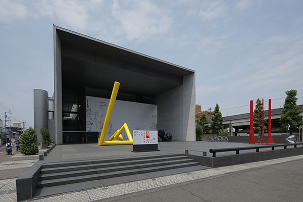
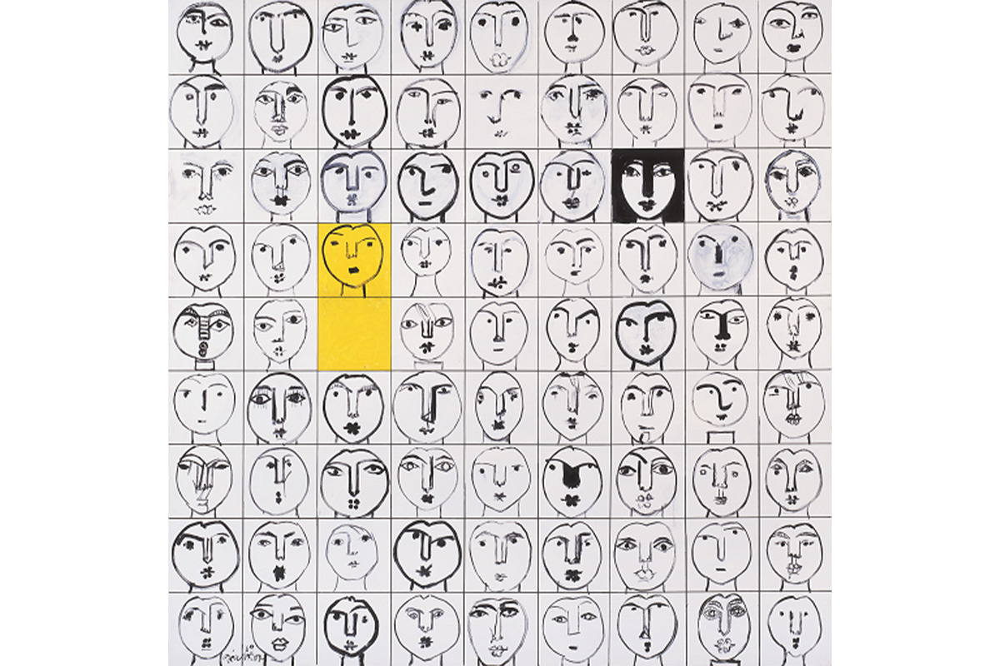
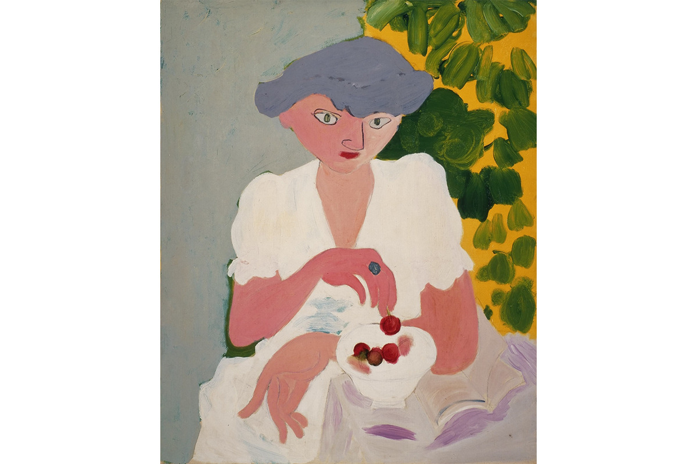
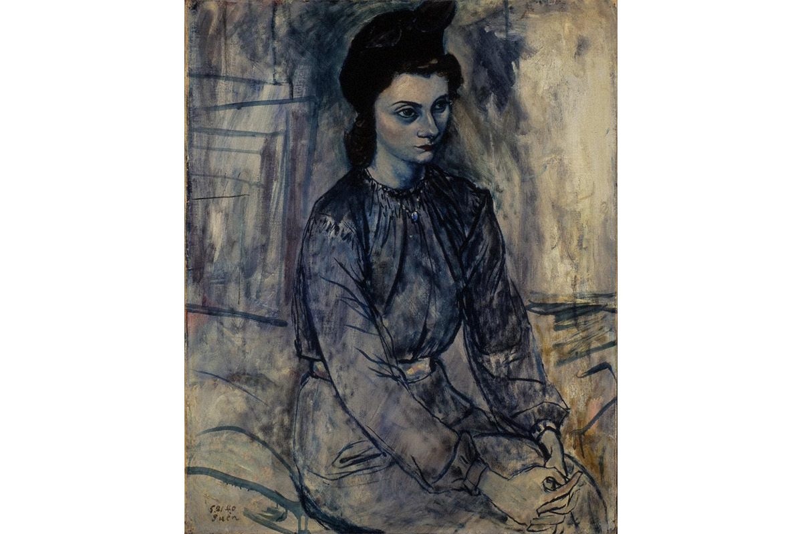
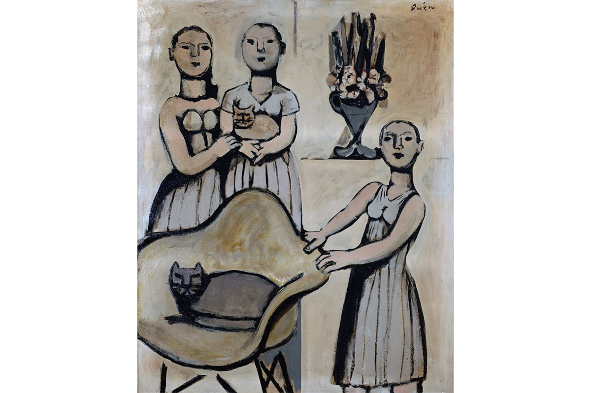
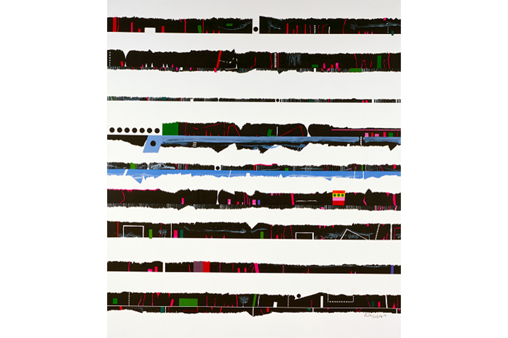
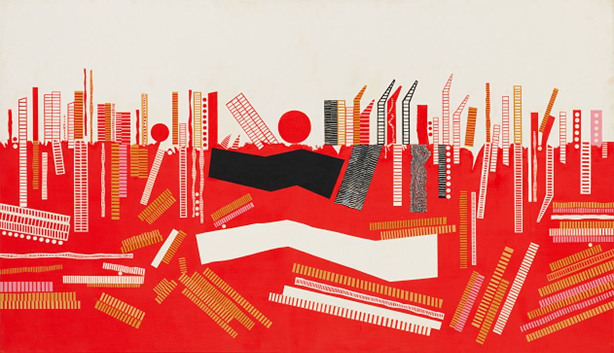
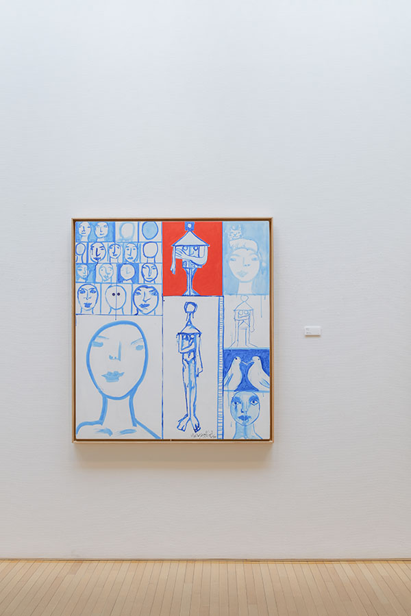
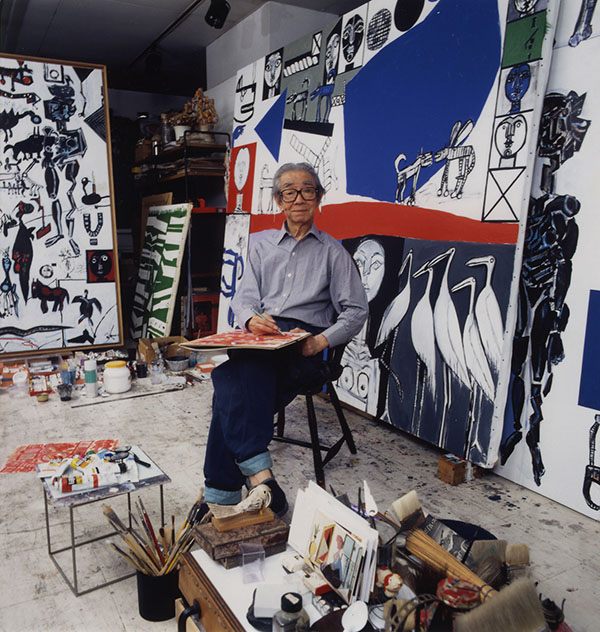

Префектура Кагава · Маругамэ · Искусство
Гэнъитиро Инокума: художник и «арт-директор» Кагавы

В Маругамэ и Сакаидэ его по-домашнему зовут «Инокума-сан»: художник Гэнъитиро Инокума был не только живописцем, но и тем, кто свёл губернатора Кагавы Масанори Канэко (1907–1996) с архитектором Кэндзо Тангэ (1913–2005). Без него «арт-префектура» Кагава вряд ли существовала бы.
Человек, связывавший людей
«Арт-директор Кагавы»
Инокума сблизил Тангэ и губернатора Кагавы, а после оставался добрым советником губернатора. По его приглашению в префектуру приезжали скульптор Исаму Ногути, архитекторы Бундзо Ямагути и Ёсио Танигути и другие мастера. В основе его творчества всегда лежало желание «создавать новую красоту»: он всю жизнь придавал значение композиции, но стиль менялся от фигуративного к абстрактному.
В Париже он встретил Матисса и на время стал писать «по-матиссовски», на Гавайях начал смело брать яркие цвета: место и люди, с которыми он встречался, влияли на его работу.
Биография
От Токио и Парижа до Нью-Йорка и Гавайев
Гэнъитиро Инокума родился в Кагаве в 1902 году и умер в 1993-м. В Токийской школе искусств он учился у Такэдзи Фудзисимы (1867–1943), одного из ведущих мастеров японской живописи западного стиля ёга, а в 1936 году вместе с единомышленниками создал Общество новой живописи. В 1938 году уехал в Париж, где общался с Матиссом и Пикассо.
В годы войны его как художника-корреспондента отправляли на Филиппины и в Бирму, где он делал записи боевых сцен. После войны он всё чаще работал «в обществе»: в 1950 году нарисовал обёрточную бумагу универмага «Мицукоси» «Хана хираку», создал панно для студенческого зала университета Кэйо в 1949 году и для центрального холла одной из главных станций Токио в 1951-м.
В 1955 году по пути в Париж он остановился в Нью-Йорке, увлёкся им и остался там почти на двадцать лет: снимал квартиру в доме, где жило много художников, дружил с Саулом Стейнбергом и Марком Ротко, провёл десять персональных выставок. «Фигуративный образ, который я всё время пытался стряхнуть, в этом городе свалился разом. Работать стало легко и приятно», писал он.
В 1973 году во время поездки в Японию он перенёс тромбоз, и с 1975 года стал работать зимой на Гавайях, а в остальное время в Японии. «С тех пор как я стал жить на Гавайях, контраст цвета стал очень ярким», говорил он. После смерти жены в 1988 году началась серия «Лица», открывшая новый этап. «У художника нет пенсии. Он бежит к неизвестному до самой смерти»: эти слова он подтвердил, работая до самой кончины 17 мая 1993 года в возрасте 90 лет.
Работы
Красота, которая ходила рядом
Более 70 лет Инокума искал в живописи «красоту» и новые средства выражения, и его путь виден по работам разных десятилетий, которые сегодня хранит MIMOCA в Маругамэ.






Музей
«Музей это больница для души»
Музей современного искусства Гэнъитиро Инокумы построили в Маругамэ к 90-летию города. Город предлагал мемориальный дом, но Инокума возразил: «Тогда сходишь один раз, и всё». Ему хотелось открытого места, где можно смотреть современное искусство. «Музей это больница для души», говорил он, поэтому место выбрали у станции, чтобы заходить было легко, «как в церковь».
Для проекта он назвал архитектора Ёсио Танигути, сына своего товарища по Обществу новой живописи. Двое хотели сделать музей, похожий на нью-йоркский MoMA, куда они ходили вместе. Публичного искусства вокруг тоже много по той же причине: Инокума хотел, чтобы красивое было рядом с повседневной жизнью, поэтому охотно брался за работы, которые видят все, начиная с обёрточной бумаги «Мицукоси».


Музей современного искусства Гэнъитиро Инокумы (MIMOCA)
- Адрес
- префектура Кагава, Маругамэ, Хамамати 80-1
- Телефон
- +81 877-24-7755
- Часы работы
- 10:00–18:00 (вход до 17:30)
- Выходные
- понедельник (если праздник, то следующий будний день), 25–31 декабря, временные закрытия на смену экспозиции
- Вход
- постоянная экспозиция: взрослый 300 иен, студенты 200 иен; вход для школьников и лиц до 18 лет бесплатный; спецвыставки по своему тарифу
- Как добраться
- 2 минуты пешком от южного выхода станции JR Маругамэ
- Сайт
- mimoca.jp
Выставка к 120-летию мастера
К 120-летию со дня рождения Инокумы в 2022 году в Музее искусств Йокосуки прошла выставка «Гэнъитиро Инокума», где по его работам разбирали роль художника в обществе. Часть выставки опиралась на собрание музея MIMOCA. Сегодня работы Инокумы постоянно показывает MIMOCA в Маругамэ: там и стоит начинать знакомство с «арт-директором» Кагавы.
Фото: Акира Такахаси.